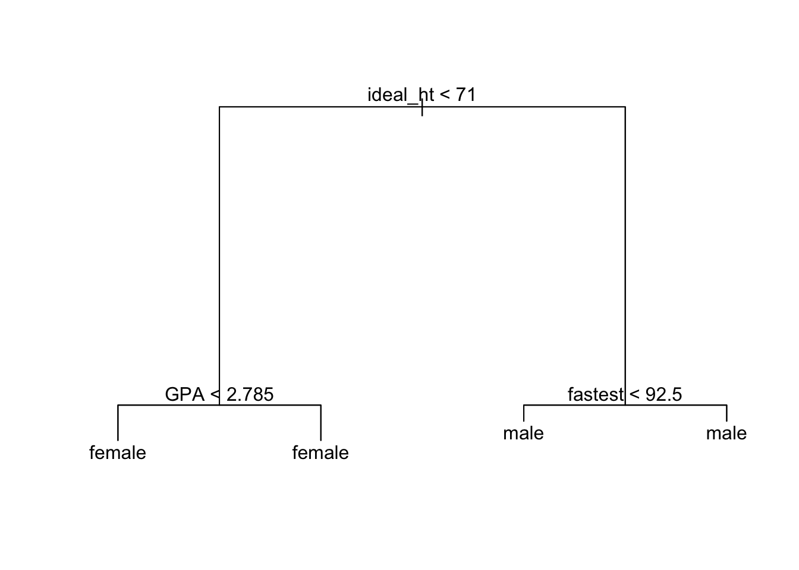
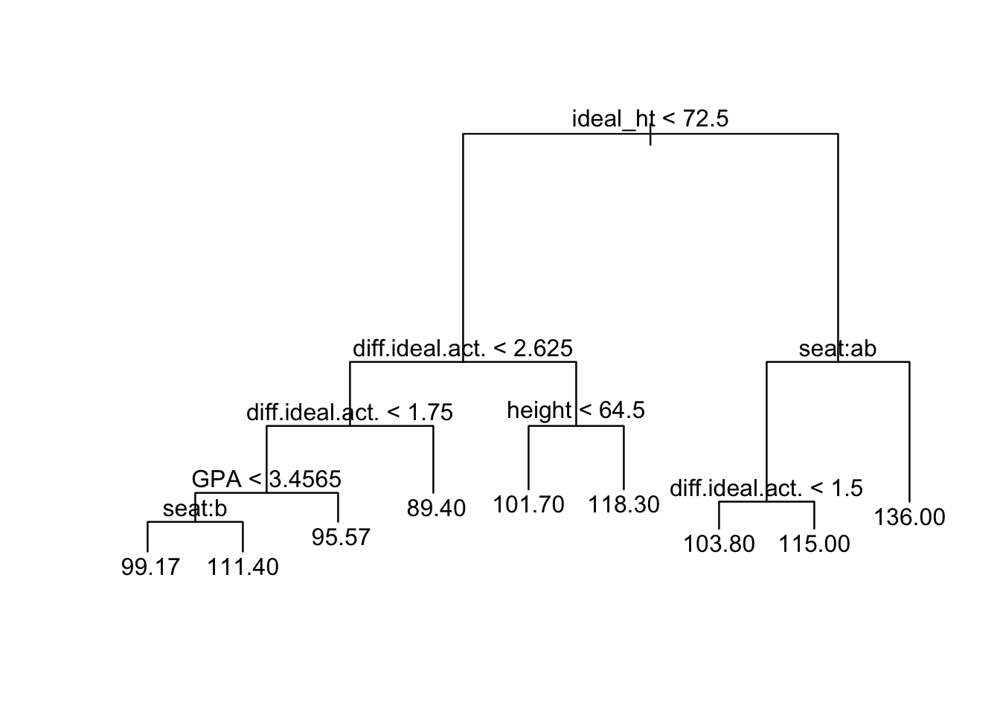

treeDetective() is a simple app that you can show to a fellow students to help him or her understand how a tree works.
Consider the m111survey data frame from the tigerstats package, and say that we construct a tree to predict the sex of a person from the other variables in this data frame:
str(m111survey)## 'data.frame': 71 obs. of 12 variables:
## $ height : num 76 74 64 62 72 70.8 70 79 59 67 ...
## $ ideal_ht : num 78 76 NA 65 72 NA 72 76 61 67 ...
## $ sleep : num 9.5 7 9 7 8 10 4 6 7 7 ...
## $ fastest : int 119 110 85 100 95 100 85 160 90 90 ...
## $ weight_feel : Factor w/ 3 levels "1_underweight",..: 1 2 2 1 1 3 2 2 2 3 ...
## $ love_first : Factor w/ 2 levels "no","yes": 1 1 1 1 1 1 1 1 1 1 ...
## $ extra_life : Factor w/ 2 levels "no","yes": 2 2 1 1 2 1 2 2 2 1 ...
## $ seat : Factor w/ 3 levels "1_front","2_middle",..: 1 2 2 1 3 1 1 3 3 2 ...
## $ GPA : num 3.56 2.5 3.8 3.5 3.2 3.1 3.68 2.7 2.8 NA ...
## $ enough_Sleep : Factor w/ 2 levels "no","yes": 1 1 1 1 1 2 1 2 1 2 ...
## $ sex : Factor w/ 2 levels "female","male": 2 2 1 1 2 2 2 2 1 1 ...
## $ diff.ideal.act.: num 2 2 NA 3 0 NA 2 -3 2 0 ...trMod <- tree(sex ~ ., data = m111survey)
plot(trMod); text(trMod)
Now we simply call treeDetective():
treeDetective(trMod, data = m111survey)The first argument is the model we made; the data argument should be set to the data frame we used to make this model.
Now suppose we want to learn what the mode predicts for a person a person whose ideal height is 69 inches and whose GPA is 3.1. As you can see from the plot above, since the ideal height is less than 71 inches we move from the root node to the left. We then come to a node where GPA is the deciding variable. Since the GPA is less than 2.785 we move to the left again, arriving at terminal node where the majority of observations are females.
The tree-detective takes the same trip through tree, interactively:
> treeDetective(trMod, data = m111survey)
Is ideal_ht < 71 (y/n/dunno)? y
Is GPA < 2.785 (y/n/dunno)? n
I have reached a terminal node with 33 items.
I predict the value is female.
The estimated probabilities for each class are:
female male
1 0 Apparently four of the six individuals at the terminal node are female and two are male, hence the prediction that this person is female.
When you are queried about a variable but don’t know its value, then you can’t move past the current node of the tree. The predcition from the tree model will be based on the observations at the node on which you are stuck.
> treeDetective(trMod, data = m111survey)
Is ideal_ht < 71 (y/n/dunno)? n
Is fastest < 92.5 (y/n/dunno)? dunno
OK, we are stuck at a node with 29 items.
I predict the value is male.
The estimated probabilities for each class are:
female male
0.03448276 0.96551724 You can use the app with regression trees, too:
trFast <- tree(fastest ~ ., data = s2)
plot(trFast); text(trFast)
Now imagine a person whose ideal height is 73 inches and who prefers to sit in the back. The interaction for this person is as follows:
> treeDetective(trFast, data = s2)
Is ideal_ht < 72.5 (y/n/dunno)? n
Is seat one of: 1_front, 2_middle (y/n/dunno)? n
I have reached a terminal node with 5 items.
I predict the value is 136.